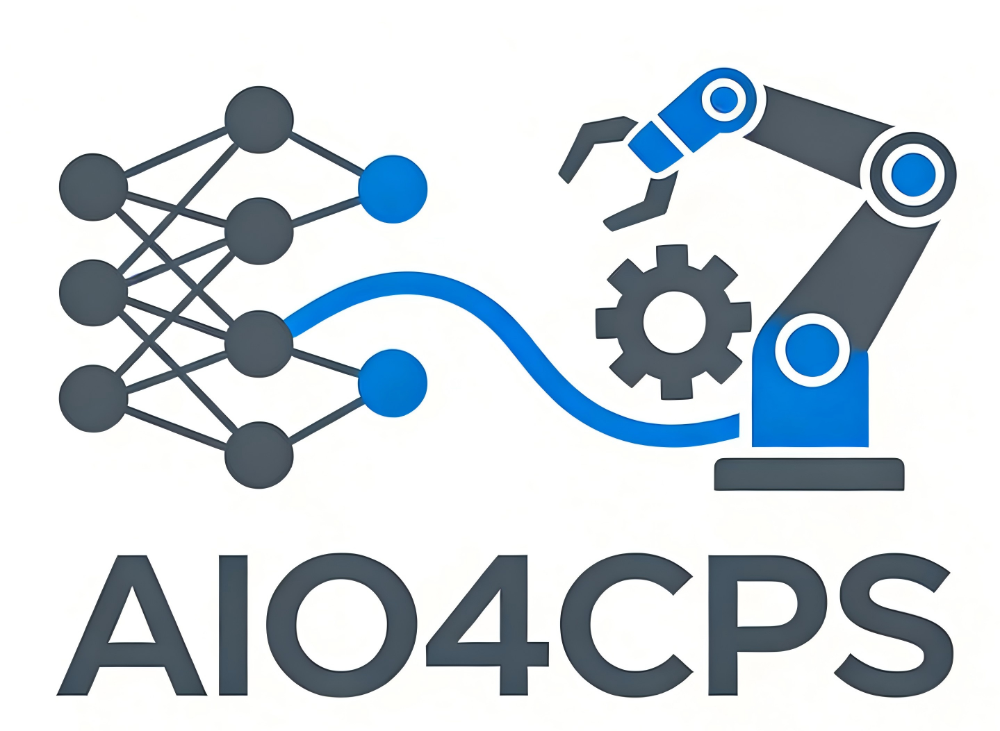

融合机理建模、数据驱动与优化理论，构建可解释、可计算、可落地的CPS决策模型。
面向IVCPS的体系结构、协同机制、模型对齐与虚实同步，探索可验证的智能决策与安全机制。
针对炼钢—连铸、热轧等复杂制造场景，提出面向不确定性与可执行性的软调度/鲁棒优化框架。
从“问题建模 → 算法设计 → 系统实现 → 工业验证”全链路推进，构建可复用的方法论与工具。
你可以从以下模块开始了解我们：
蒋胜龙 · 研究方向与论文列表
研究方向矩阵 · 加入方式
简要介绍 + 外部链接